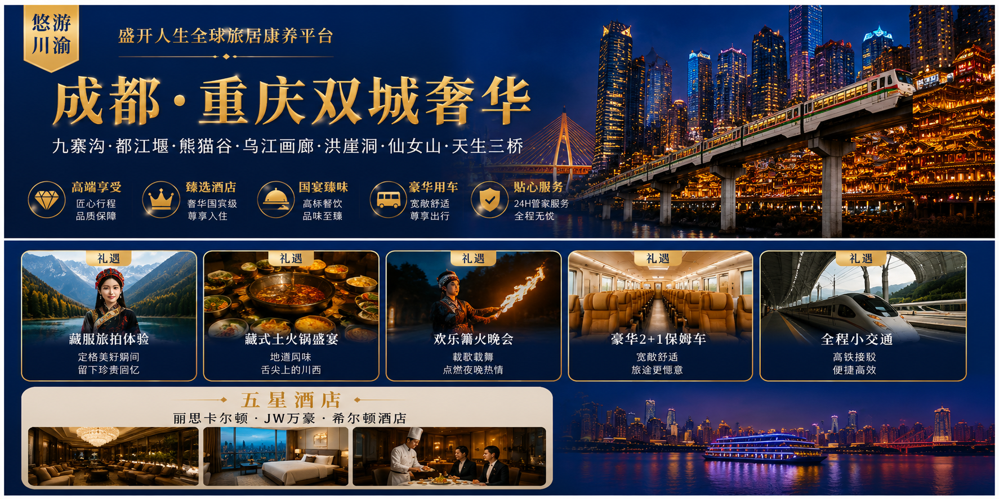
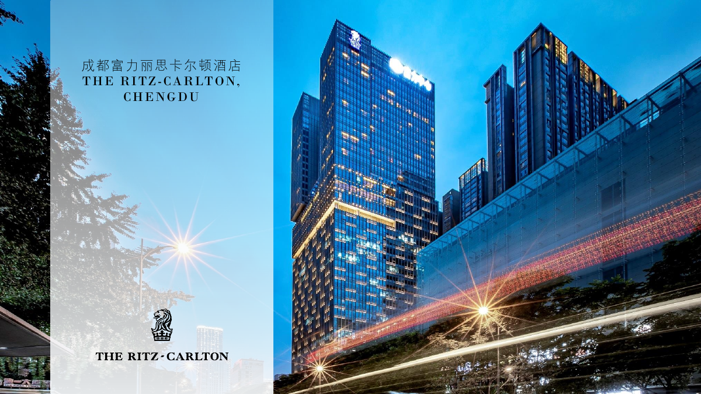
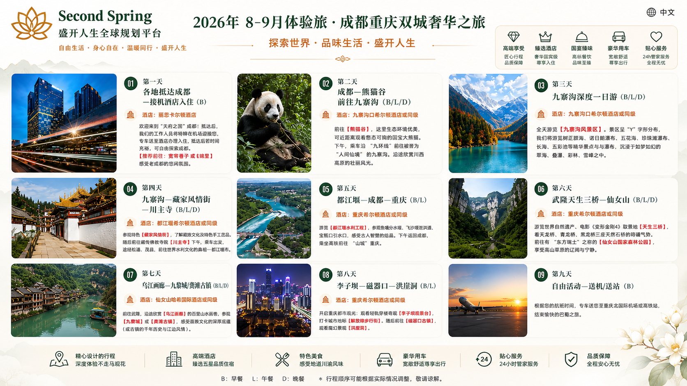

← 返回全部精选体验
03 · Chengdu & Chongqing Journey
—
成都·重庆双城奢华
Chengdu & Chongqing Twin-City Journey
从成都的闲适人文走向重庆的山城夜色，再深入九寨沟与武隆山水，感受川渝的丰盛与热度。
Journey Overview
双城烟火与世界级山水，一程尽览川渝。
本段旅程计划串联成都、九寨沟、都江堰、熊猫谷、重庆与武隆片区，在城市文化、特色美食、自然景观和舒适住宿之间取得平衡。
行程亮点
- 九寨沟、都江堰、熊猫谷、乌江画廊等代表性景观。
- 洪崖洞、仙女山、天生三桥与重庆山城夜景。
- 计划入住丽思卡尔顿、JW 万豪及希尔顿等五星酒店。
- 藏服旅拍、藏式土火锅、篝火晚会与川渝美食体验。

Hotel Introduction
成都富力丽思卡尔顿酒店
The Ritz-Carlton, Chengdu
查看酒店完整介绍，进一步了解成都入住环境、酒店空间与服务信息。
打开酒店介绍 PDF ↗